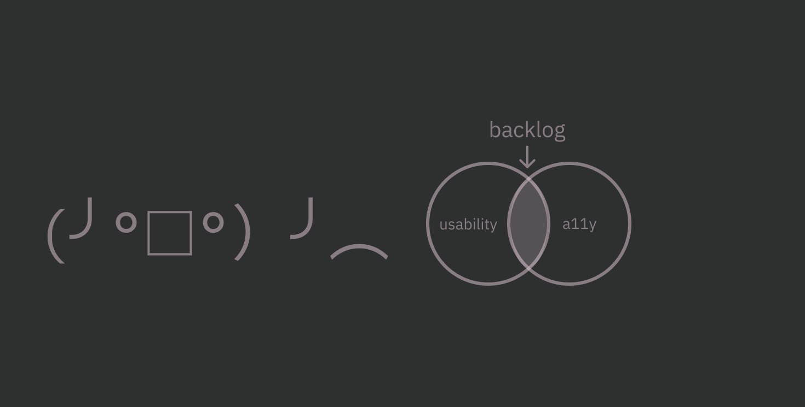

Accessibility and Typography
Tatiana Fokina, [meetup] #1, November 2, 2024.
Accessibility and typography

What is typography?
Typography is the way how the texts are
arranged and visually appealing.
Benefits of typography
- Increase accessibility and usability of your interfaces.
- Set the right mood or tone.
- Improve product and brand appearance.
- Create a consistent brand identity.

Accessibility and usability
Usability is a measure of how effective, efficient, and
satisfying interfaces are.
Accessibility (a11y) focuses on the possibility to use interfaces
for people with disabilities first of all.

Accessibility in typography is about
visual clarity
Visual clarity
How easy to see and understand in design, clearly showing information.

How to measure clarity?
User-friendly typography based on two turtles — legibility and
readability.
Readability and legibility
Readability refers to how easy text is to read.
Legibility refers to how easy to see, distinguish, and recognize
the characters and words.
Legibility components [1]
- Typeface.
- X-height.
- Counter.
- Letter spacing…
Legibility components [2]
- Distinct letterforms.
- Font size.
- Font weight.
- Line height.
- Contrast.
Legibility components [3]
-
Character width is the overall width of every font
characters.
-
Stroke contrast is differences between thick and thin strokes.
-
Familiarity is the measure how much letter shapes is familiar
Typeface and font
-
Typeface is a family of related designs for text characters
(letters, numbers, and symbols)
-
Font is a specific version of a typeface with particular
characteristics including weight (bold or regular), style (italic or
normal), and size.
Typeface vs. font

Typeface styles [1]
Serif has a small decorative strokes (serifs) on the tops and
bottoms of the letters.
Sans-serif (sans) is a typeface designed without serifs.
Typeface styles [2]
Monospaced (mono) typefaces include characters that all take up
the same amount of horizontal space.
Display typefaces contain more decorative and eye-catching
designs than regular fonts.
Usually sans-serif typefaces are more accessible than
serif, display or monospaced ones.
Basic accessible typefaces
- Arial,
- Calibri,
- Poppins,
- Tahoma,
- Verdana.

Special accessible typefaces
- Atkinson Hyperlegible,
- Hargreaves (Scope),
- FS Me (MenCAP),
- Lexend.

Typefaces style on practice
Dyslexia
This is a learning disability that affects
reading skills. Unlike other learning disabilities,
intelligence isn't affected.

About 10% of the world's adults, or
750 million people, cannot read or write.
Dyslexia is a factor in 70% to 80% of these cases.
Main symptoms of dyslexia
- Hard to listen and maintain focus.
- Slowly reading.
- Hard to scan or skim text.
-
Confuse visually similar words like “cat” and “cot,” «голова» и
«глава».
- Spelling problems.
Dyslexia can appear differently and be more or less common depending on
language rules and writing system.
Language rules
The complexity of language depends on its spelling, grammar, and
pronunciation.
- Easier languages: Italian, German, etc.
- Harder languages: English, French, Russian, etc.
Writing system
Dyslexia can be affected by the type of writing system.
-
Albhabetic languages lead to trouble connecting sounds to
letters. Examples: English, Hiragana, Hangul.
-
Logographic languages involve problems with visual processing,
sound recognition, and memorizing characters. Examples: Chinese,
Kanji, Hanja.
Dyslexia-friendly typeface rules
- Simple, plain and easy to read.
- Light or regular font weight.
- Lowercase letters.
- Distinct and wide letterforms.
- Moderately spaced characters.
Dyslexia-friendly typefaces
All sans-serif typefaces, especially:
- Arial,
- Comic Sans,
- Omotype,
- Open Sans,
- Roboto.
Special dyslexc typefaces
Legibility disaster

This is better

X-height
Height of lowercase letters in proportion to capital letters.

Typefaces with larger lowercase letters in
proportion to uppercase letters are easier to read.
Counter
Partially or fully enclosed space inside letters and symbols.

Open and closed counters
-
Closed counters is completely enclosed spaces within letters.
-
Open counters have an opening aperture that connects to the
outside of the letters.

Prefer typefaces with open counters.
Counters on practice (lathin)
Counters on practice (cyrillic)
Letter spacing (or tracking)
Horizontal spacing between all letters in a word or section of text.

More space between a letters helps with the readability of
all-caps text or
an extremely thin font.
Less letters space is legit only for a
very large font.
Letter spacing on practice
Users preferences
Users can adjust text spacing via plagins to make it easier to read
because of their:
- Dyslexia
- Visual impairments
- Other personal preferences.
Support user-defined settings
Set these text style properties and ensure there is
no loss of content or functionality:
- Letter spacing to at least 0.12 times the font size
- Word spacing to at least 0.16 times the font size
Distinct letterforms
The visual shape or design of a letter. Concerns about letterform
iclude:
- Imposter letters.
- Mirroring (flipping) letters.
- Uppercases and lowercases.
Imposter letters
Letters and other characters which is identical with a different one in
a typeface. Examples: “L,” “l” and “1,” «З» and «3,» «В,» and «8».
Mirroring characters
Characters which looks like another when flipped or rotated. Examples:
“b” and “d” in English, “0” and “O.”
Russian language doesn't contain flipped letters.
Letter cases
Distinction between the letters that are in larger uppercase (capitals)
and smaller lowercase.
The most important characters
- Lathin uppercases: “C,” “O,” “0,” “B,” and “8”.
-
Cyrillic uppercases: «З,» «3,» «С,» «О,» «0,» «В,» «Б,» and «8».
- Lathin lowercases: “a” “e,” “o,” and “c”.
- Cyrillic lowercases: «о,» «с,» «б,» «6,» «ь,» «ы,» and «ъ».
Use typefaces that have a clear differentiation between similar
characters.
Font size
Number of a typeface that measures the size of letters and other
characters on a screen.

Minimum font size is
16 pixels (12 points) and bigger for desktop
intarfaces and not below
12 pixels (9 points) for mobile interfaces.
Users preferences
Users can setting up the font size via system features, browser
settings, or browser extensions and plagins:
- Control font size.
- Resize text without assistive technology.
Users preferences
Users can setting up the font size via system features, browser
settings, or browser extensions and plagins:
- Control font size.
- Resize text without assistive technology.
Text resizing
All users can change the font size in browesers setting. It's lead to
change the font size not only in the user agent, but in web page
interfaces too.
Text can be resized without assistive technology up to 200 or 400
percent in a way that does not require the user to scroll horizontally
to read a line of text on a full-screen window.
Fluid typography
A responsive typography technique where the text scales automatically
with the screen size.
Fluid typography rules
- Make your default font size reasonably big (at least 10 point)
-
Do not use absolute font sizes and use flexible units such as %, em,
or rem.
-
If your site targets senior citizens, use bigger default font sizes
(at least 12 point).
- Fluid sizing vs breakpoint-based sizing
-
Line length can be unpredictable at different screen widths for text
whose size is static.
-
Allowing people to retain control over the font size displayed in
their browser is one of the most basic of accessibility requirements.
-
Fluid typography doesn’t play nicely with the default browser font
size and therefore shouldn’t be used until that changes.
-
Avoid providing images of text, as such text cannot be resized through
text resizing.
Text zoom
Default browser feature zoom by decreasing the viewport size; as content
increases, CSS breakpoints will fire and display content designed for
smaller screens. This results in everything appearing larger while
remaining readable.
Text zoom rules
-
Don't usr CSS static units, that is, pixels for sizing:
width: 200px, height: 200px and
overflow: hidden
-
Aoid providing images of text, as such text may become blurry when
zoomed.
- avoid horizontal scrolling on viewports 320px wide and larger.
-
Define font sizes and text container dimensions in relative units,
such as ems, rems, percents, or named font sizes. Avoid explicitly
defining the width and height of containers in pixels.
- Use CSS, rather than tables, for layout.
-
Provide sufficient space between columns of text to mitigate the risk
of text overflowing their containers.
-
If images of text must be used, the text should be at least 18pt
(24px).
- Don't disable zoom
-
-
-
Text can be resized without assistive technology up to 200 or 400
percent without loss of content or functionality.
Font weight
Thickness of the lines in each letter. Can be light (300,) regular
(400,) semibold (600,) bold (700,) etc.
Font weight in theory
Thin fonts are too light, and it is hard to read them.
Regular fonts are more readable because they look simpler,
cleaner, and less chunky.
Heavy, bold fonts are too dark and can be unreadable.
Use regular fonts for most text. Save bold for headings
and emphasis. Thin fonts work best for decorative text.
Thin typeface in the wild

Line height (leading)
The space between lines of text, which can change based on body text
size.
Optimal line height
-
For desktop interfaces optimal value is between 1.5 to 2.
-
Space within paragraphs is at least 2 times the font
size.
-
For mobiles optimal value is between 1.3 and 1.45, or
around 1.5 if you use one value for all screen sizes.
Line width (lenght)
Width of a block of text, measured in inches or number of characters.
Line width in theory
- Line width depends on the typeface and language.
-
Longer lines need more line height, shorter ones need less height.
-
Line width doesn't matter on phones because the screen is small and
narrow.
The optimal number of words per line is between 45 and 80,
including spaces.
Long line width: 207 ch

Optimal line width: 100 ch

Contrast
Represent how different one color is from another color between text and
its background.
Contrast in nutshell
Contrast ratio depending on a few factors:
- Font size.
- Font weight.
- Font style.
Contrast important consurns
Not all users need hight contrast interfaces. It can be damaged for
people with:
- Astigmatism.
- Light sensetivity.
- Attention-deficit/hyperactivity disorder (ADHD.)
- Autistic Spectrum Disorder (ASD.)
Contrast ratio for large text should be between 3:1 and 7:1 against the
background, small text should be 4.5:1 against the background.
How to measure legibility?
Check reading speed in words per minute for a sample of users, as they
read some simple text. If users are, on average, say, 20% slower when
reading from your design than when reading from a reference design, then
you know that your site has poor legibility.
Readability components
- Legibility.
-
Consistency and hierarchy — consistent fonts and styles for
headings, body text.
- Level of complexity of the text and its familiarity.
Readability unique score components
- How long words and sentences are.
- Passiave or active voice.
- Spelling and grammar.
- Match the tone to an audience.
How to measure readability?
Usually scored by computer via readability calculators based on
different readability formulas.